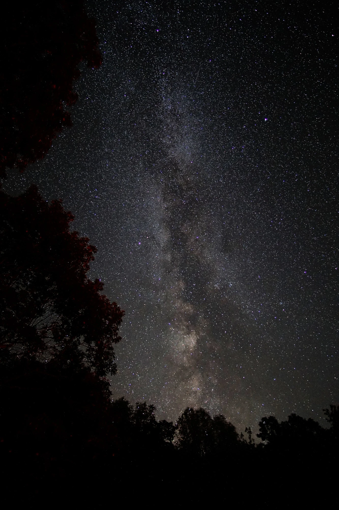

Open-source software
I lead development of aweSOM, a CPU/GPU-accelerated Python package that combines self-organizing maps and statistical ensembles to detect anomalies in large datasets.
I lead development of aweSOM, a CPU/GPU-accelerated Python package that combines self-organizing maps and statistical ensembles to detect anomalies in large datasets.
I manage an NSF ACCESS allocation as principal investigator and run multi-node distributed simulations on supercomputing clusters with MPI, Slurm, and PBS.
I build workflows for simulation outputs with more than 10 million data points across thousands of snapshots, and inference pipelines for stellar and spectroscopic survey data.
I have mentored students and early-career researchers on projects that led to peer-reviewed papers, and led collaborations across simulation, theory, and observation.
Ha 2026, Ph.D. dissertation, University of Massachusetts Amherst · LaTeX source
Ha et al. 2025, The Astrophysical Journal Letters
Ha et al. 2025, Journal of Open Source Software
Ha et al. 2023, The Astrophysical Journal
Ha et al. 2022, The Astrophysical Journal
